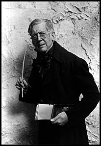

“Where there is so much to speak about
one must exercise care in selection.”
Walter Besant
 Many actors possess precious relics of dramatic interest somewhere, stowed away. I am not referring to those press-cuttings recording favourable mention of their performances; though undoubtedly many of our calling are deeply interested in printed matter concerning of bygone days and illustrious players of the past.
The Theatre represents a form of entertainment which has been in existence sine 1560. These were Morality plays, but the earliest Theatre was not built until about 1576. Consequently a vast quantity of theatrical matter has accumulated since then.
The word Literature has become a symbol for written compositions which are remarkable for form and style and which possess a certain dignity; a staid demeanour and air of rigid gravity, commanding respect.
There are many ancient publications dealing with the Theatre and theatrical people of past days which, however entertaining, we do not class as literature but regard with an indulgent eye.
There are a number of dealers in these things who issue priced catalogues which, besides being a source of information, are a testimony of the regard in which Theatrical Literature is held.
During my wanderings it was my good fortune to become acquainted with one John Anderson who, like myself, was on his way to New York: there he was to superintend a sale at the American Art Association in Madison Square, of the Literary And Artistic Property of the late Evert Janson Wendell.
Wendell was an extremely wealthy old Harvard University Graduate and had bequeathed to Harvard his collection of Theatrical Literature. In 1900 he had purchased Augustin Daly’s Library which probably increased his appreciation for such acquisitions, for after his death the extent of his own library was found to be almost beyond belief: an extraordinary collection to have been amassed by one man.
Anderson set aside the most valuable and desirable items for the Harvard Library, the remainder to be sold by auction, the proceeds to go to Harvard. The sale was spread over twenty sessions; this furnishes some conception of the size of the collection.
Wendell had another hobby, his interest in the young people of the slums. New York, in common with all large cities, has its underworld, with its squalor, misery and want; and the young folk growing up among it attracted the attention of Wendell. His philanthropy was a byword: the down-and-out he succoured, the weaklings he lifted up. He knew personally thousands of these youngsters and they used to come - Anderson told me - in droves to his house in 38th Street for advice, help and comfort. Wendell had bought farms and ranches in Texas and other States and once a year at least he would take a selected group of 30 or 40 boys and place them with farmers’ families. He was the making of thousands of useful citizens. How many of us who share his interest in Theatrical Literature would not envy him his other record.
Anderson had not forgotten my interest in these relics of the Stage and he forwarded to me later, the Catalogue of the Sale: this consisted of six bulky volumes. The duplication of the rare 1698 Edition of Jeremy Collier’s Short View of the Immorality and Profanity of the English Stage, and six of another rarity - An Apology for the life of Colley Cibber of 1743. My copy bears that date but is only a second Edition. This kindly thought of John Anderson forms a useful source of reference.
H. B. Irving in his Occasional Papers of 1906 wrote about Cibber’s Apology - “It is little known I have no doubt at the present time to many authors and critics”. Almost he seems to regard it as a discovery of his own. But it is - as he said - a very valuable work.
Lives of actors and actresses of the past take an important place in this kind of literature. I have often wondered how many hundreds there may be. Several celebrated actors have had many biographers. Such a one was Henry Irving. I possess fifteen of that distinguished actor, and his copy of Hawkins’ two-volume Life of Edmund Kean which has his bookplate, designed by Byam Shaw, pasted inside the cover. The pages concerning Macbeth, Richard III and King Lear are heavily scored in the margins by Irving’s well known untidy pencillings.
Irving matter includes that scurrilous pamphlet - for it is little more - The Fashionable Tragedian. The authors’ names do not appear upon the cover and this is not surprising; but it is well known that it was written by William Archer and R. W. Lowe. It was published in 1877 by Thomas Gray of Edinburgh and contains ten crude and ill-natured illustrations. William Archer we know, was a distinguished writer and critic and I think he repented later of what I hold to be his one time lapse. Some ten years after he was responsible for a small volume, Henry Irving, A Critical Study and this he did put his name to. He divides Irving’s career into three periods: I. His earliest efforts in the Provinces and in London. II. The Bateman regime in London. III. The five years of his own management. This ingenious arrangement he may have imagined might draw a curtain over the clumsy strictures of his Fashionable Tragedian of 1877 and leave him free to lecture Irving still further. He commences this fresh work on Irving - “It is not for me to enlarge on Mr Irving’s high personal character, his generosity, his amiability, his courtesy, etc.”. These tributes after ten years come a little late in the day, and he still indulged in a few jibes at Irving’s mannerisms. This brilliant writer became more temperate later in his life: his five volumes - 1893 to 1897 - of The Theatrical World are invaluable. I think R. W. Lowe also must have been a little contrite for his share - whatever it may have been in the Fashionable Tragedian, for when he published his English Theatrical Literature in 1888 he dedicated it to Henry Irving. This large volume is a mine of information and a very valuable and comprehensive work. Only a hundred copies were printed; seventy five for England and twenty five for America. It contains an exhaustive record of existing theatrical publications; the most complete, I think, of that time and so I believe it remains today.
To revert to the unhappy Fashionable Tragedian, it must not be forgotten that shortly after its appearance - in the same year - a rejoinder was published, under the title A letter concerning Mr Henry Irving, addressed to E.R.H., and on the cover appeared this quotation from Carlyle - “Good breeding lies in human nature and is due from all men towards all men”. It is a powerful, logical and dignified reply to Archer’s and Lowe’s attack on Irving.
Perhaps it is only a question of time when we shall have lives of famous film actors. I think Charles Chaplin’s Life might provide attractive reading.
Published lives of actors when written by the literary critic are frequently - I hope I may be forgiven for saying - found to be less satisfying than those of the less practised writer: they seem to lack that intimacy, that suggestion of familiarity which brings us closer in touch with these great people whom we have admired and discussed and felt we knew. Long ago I found myself among a gathering of important people and my attention was drawn to a tall, distinguished-looking - almost patriarchal figure, and I enquired whom he might be. I was told - “Oh! That’s old Joe Knight”. It seemed to me, to hear this famous critic referred to in this flippant manner was wanting in respect. Joseph Knight always struck me a somewhat distant figure but though he was a sound critic it was not in his nature to be liberal with bouquets. He wrote of Ellen Terry’s Pauline in The Lady of Lyons - “It is too early yet to gauge fully the talent which has revealed itself: it seems probable that Miss Terry’s powers will be restricted to depicting the grace, tenderness and passions of love”. Later he referred to “her admirable acting - picturesque, tender and womanly throughout” and again “on one or two occasions she gave an inspired rendering of Ophelia”. I cannot remember if this writer lived to see Ellen Terry in the full endowment of her powers, but these extracts are significant. It seems odd to come across the following today - “the Fenton of Forbes Robertson deserves mention” and “the interpretation by Forbes Robertson was satisfactory”.
A. B. Walkley commences one of his chapters of Dramatic Criticism - “It is not to be gainsaid that the word criticism has gradually acquired a certain annotation of contempt: indeed,” he continues, “everyone who expresses an opinion, however imbecile, in print calls himself a critic”. Gillette was reported to have said - “The only critic whose opinion he respects is the average spectator”, and Walkley goes on to say “I only know that the kind of criticism held most firmly in regard by the actor is that of a fellow actor of experience and proven merit”.
This is a modest pronouncement by a critic in the high position held by Walkley and it helps us to understand and value the acumen he possessed. It is perfectly true that actors do appreciate commendation from those of their own calling whom they admire and respect, as well as their advice and censure.
The universal interest in the theatre is demonstrated by the amount of literature that has been published concerning the Theatre; that which I believe to be the most engrossing, dates back to the seventeenth century and beyond.
I have little doubt that there are several lives of David Garrick, but I believe the most important and reliable are those written by Thomas Davies and Arthur Murphy respectively. This renowned actor was born in 1716 in Hereford and died in 1779. He was buried below the monument to Shakespeare in Westminster Abbey. It is odd that we should often think back to Garrick as the earliest -of our actors, forgetting Betterton, Dogget and Cibber, and many others. I have always regarded Henderson (1747-1785) as one I would have wished to see; also Philip Kemble, George Cooke, Suett, Munden, Edward Knight, Paul Bedford, Quin Shuter, Robson, and of course Edmund Kean. How greedy I am!
An apology for the Life of George Anne Bellamy - late of Covent Garden Theatre - six volumes - 1785. This is worth perusing. It is an extraordinary publication, and is addressed to “His Royal Highness, George Augustus Prince of Wales”: in a fulsome letter which begins, “I am at a loss to express my sensibility of your Royal Highness’s condescension in accepting this address, after hearing that I was favoured with your noble preceptors permission to lay my poor work at your feet.” There follows a dedication “To His Grace the Duke of Montague - From my earliest day I have been taught to look upon Your Grace as a being of superior nature to the most elevated race of mortals”. The Apology takes the form of letters to the Hon. Miss - and consists, writes Miss Bellamy, of “a review of many of the scenes I have gone through and of the imprudences I have committed which cannot fail of giving me pain - I will hope from your friendship that the prolixity unavoidable in the relation of such a number of events will not prove tiresome and disgusting to you” - etc.
The five volumes deal with her adventures, the many embarrassing situations of which her beauty had been the cause. She makes it clear that she had moved in the most distinguished circles, which had included Garrick, Quin and Mrs Woffington - and complains continually of her “temptations - being everlastingly besieged by persons of highest rank among those practised in the art of seduction.” She reveals a succession of unfortunate situations in which - she bewails - “her beauty was the cause”. It is an extraordinary publication of plain-speaking which may have produced a pecuniary reward. Literature of this type I think comes under the heading “Curious”.
I recommend the Memoirs of George Frederick Cook Esq. by William Dunlap, 1813. Dunlap was asked rather sportingly to be Cooke’s biographer. He was furnished with many manuscripts penned by Cooke himself - partly in the form of a diary, the following being a typical example:
Called up by the ostler before four, and about half past set out for Hounslow; from thence to London and arrived at the York Hotel in Albemarle Street about a quarter before eight... breakfasted, dressed, went to the theatre and ran over the part of Richard. On my return to the Hotel met several acquaintances and there dined. Took a coach, stopped at No. 34 Leicester Square, drank a glass of brandy and water, went to the theatre, dressed and played Richard for the thirty sixth time in London... was well received by a crowded audience... after the play... Mrs Cherry, late of the Dublin and Bath theatres, sat some time in my dressing room and accompanied me as far as Albemarle Street... supped, looked over the Sun paper, and went to bed before one.
“All correct!” Dunlap mentions - when Cooke had been a trifle erratic.
It will appear astonishing to those who do not thoroughly know this extraordinary man that he could have wasted the money which we know him to have received since he came to London in 1800. That he could, though receiving great sums, winter and summer for the last seven years, be now reduced to such extremity of money and credit, that he is shut up for debt, immured for months, as the only probable resource of his creditors.
“Cooke never gambled,” Dunlap tells us. “He knew and felt the value of money as much as any man, and was not disposed to give more than other men - except in moments of mad intemperance.”
Boaden - who was responsible for a life of Kemble - who in all probability never saw Cooke at his best - tells us:
“The real excellence of Cooke was a certain sturdy force and cunning... he succeeded powerfully as Shylock and Iago. His wheedling flattery of anne in Richard III was the likeliest thing on earth to succeed. His real excellence was a certain sturdy force and cunning combined, which fitted him for the very parts in which he excelled. He succeeded powerfully also in The Man of the World. In these parts he had no occasion to fear any competitor,” said Kemble, and this is high praise, as he was known not to approve of Cooke. I have always felt that Cooke at his best must have been superb, and that between Edmund Kean and Cooke, the values must have been difficult to gauge.
Hazlitt, writing of Kean’s Macbeth says,
The murder scene was heart-rending; the hesitation, the bewildered look, the coming to himself when he sees his hands bloody, the manner in which his voice clung to his throat and choked his utterance; his agony and tears, the force of nature overcome by passion - beggared description. It was a scene which no one who saw it can ever efface from his recollection.
B. W. Proctor - better known as Barry Cornwall - writing of his Macbeth tells us,
Probably nothing finer was ever seen upon the stage than Kean’s performance of the scene that follows the murder of Duncan: the remorse of one who had committed his first crime. There was no alarm lest detection might ensue, but there was stupefaction of the senses. He seemed blinded with the blood that he had shed, and only awakened to a recollection of what had happened, at the sight of his crimson hands and the voice of his wife recalling him to manhood.
Mrs Siddons, one of the great figures of the theatre, made her first appearance at Drury Lane Theatre in 1782, and was soon recognised as the Queen of Tragedy. Perhaps there never was a better stage figure than Mrs Siddons. It was said of her,
So great was the flexibility of her countenance that the rapid transitions of passion gained great variety. Her lamentation had a dignity typical of herself alone. Her commanding height and the powerful action of her figure, her gestures in tragedy, though dignified, were frequent and violent, but it was only at rehearsal; she knew that the effect of her voice carried out her conception.
Plays in those days were written in what is called the grand manner, and who could have dealt with them better than Mrs Siddons? A remarkable statue of this actress by Chavalliaud, after the portrait by Sir Joshua Reynolds, stands on Paddington Green, and her grave is in Paddington Old Churchyard.
John Philip Kemble, 1757-1823, described by the younger Pitt as “the noblest actor I have seen”; was surely one of the most handsome of our tragedians, as well as one of the most distinguished. His statue as Cato, a very poor one, stands in the St Andrew’s Chapel of Westminster Abbey, next to that of his sister whose triumphs he so often shared.
James Boaden was responsible for a life of Philip Kemble. This distinguished actor made his first appearance in London in the part of Hamlet on 30th September 1783. His final appearance was in the Theatre Royal, Covent Garden on June 23, 1817, when he appeared for the last time as Coriolanus. He had for some years been troubled with a cough, owing to irritation of the lungs, and he was advised to live at Lausanne, and there he died on February 26, 1828.
A touching tribute to his memory was paid by his valet who had been as he worded it, “his faithful servant for twenty years... he treated me more like a brother than a domestic... when I left him he gave me two hundred pounds, to help to set me up in business.”
I must linger for a moment over the Autobiography of Charles Matthews (the elder), born 1776. It is the only Life of this actor that I know of. His letters to his wife form the main source of information about this famous actor. He was sent when a boy to St Martin’s Free School and in the evening attended a French School on the first floor of a pastrycook’s shop in Bedford Street, Strand. His father was a bookseller who did not fall in with his son’s desire to become an actor; but this weedy lad made his first appearance in 1794, and after being for several weeks without a salary he appeared at Cork, and lodged in the same house with the celebrated George Frederick Cooke, who invited him to supper one night. Late in the evening Cooke, having partaken very liberally of “glass after glass of punch”, gave his young guest facial examples of the various passions, which he desired him to name and which Mathews always failed to do: this infuriated Cooke. “Look again, Sir” he said, exhibiting a hideous distortion of his features, “What passion does this represent?”. “Revenge” said Mathews. “Curse your stupidity,” shouted Cooke, “That was love.” And at length he became so infuriated at his guest’s ineptitude, and because the landlady refused to brew any more punch, that he began to break up the furniture and hurl the pieces out of the window. Mathews managed to escape and lock himself in his room.
This youngster grew into the distinguished Charles Mathews of history. In course of time he seems to have prospered and he and Mrs Mathews lived in some show of affluence in a large house, standing in grounds of some size, with carriages and horses. Mathews indulged in the expensive hobby of collecting theatrical portraits, and also was unlucky in his investments, and by way of retrenchment moved to Great Russell Street. Then came the question of housing his collection of pictures. They were exhibited, 388 in number, at the Queens Bazaar in Oxford Street. Many of these portraits of actors and actresses I believe, are hanging in the Garrick Club today.
Charles James Mathews, his son was often spoken of as The Spoiled darling of fortune; but he had a chequered career, full of ups and downs which his mercurial temperament enabled him to cope with. He lived longer than his father.
Charles Dickens was responsible for a two volume story of his life; his association with Lord Blessington and count D’Orsay is perhaps a little overstressed - though his doting parents were - no doubt - pleased that their son should move in such society. But this actor - debonair, popular, gay and feckless - enjoyed his life in spite of reverses and money troubles. It was said of him that he was never really happy unless in straits and difficulties. He was imprisoned for debt in Lancaster Castle in 1856 - but shortly after the death of his wife he was released and his debts were paid. He went to America hoping to bring back a fortune, but brought back another wife instead.
Later on we find this resilient actor writing to Henry Irving inviting him to dine with him at his hotel in Dublin - “I shall order some blue-rock oysters, a Dublin Bay Haddock, some colcanon and an Irish Stew - washed down with Guinesses stout ad libitum: and if that doesn’t satisfy you - nothing will.”
My father who had seen this talented actor on the stage - used to repeat to me many of his sayings with tears of laughter in his eyes, and I almost feel that I had seen him too.
It is worth turning over the pages of Actors of the century, 1898, a bulky volume which contains portraits of nearly a hundred theatrical people varying from Mrs Siddons to Charles Hawtrey. There is little concerning Mrs Siddons that we are not familiar with; but of her earlier days were are more ignorant, though they are quite interesting. She was playing child-parts in the company of her father, Roger Kemble: another member of the company was a young actor playing responsible parts: his name was Henry Siddons; he had the reputation of being a remarkably quick study and was much esteemed, and Sarah Kemble fell in love with him. In consequence her father withdrew her from the stage and placed her with a Mrs Greathead in Warwickshire as lady’s maid. The young couple however corresponded clandestinely and when Sarah reached the age of eighteen her father consented to her marriage. Mr Boaden - the biographer of her life - becomes a little cautious at this point. He tells us that Mrs Siddons - as she was then - was sadly afflicted by the death of her first child and later on - to use the luxuriant verbiage of Boaden “was alarmingly depressed at a second string being severed from the matrimonial bosom” and now this Biographer discovers that “Mr Siddons became some what impatient of what the historians call the crown matrimonial, and moreover (and this is typical Boaden) had a hardly blameable self-esteem which produced in a most honourable and high-spirited man some inequalities of temper which seemed harsh to a woman conscious of the most unremitting diligence in her exertions and often endangering her health”. The egregious Boaden goes on to say - “the merits of Mr Siddons as an actor at length became so obscured by the talents of his wife that it did not consist with the interests of the family to allow him to continue on the stage, and he retired to Bath”. Now we hear no more of Mr Siddons. Mrs Siddons” final appearance was at the Argyll Rooms where she gave Shakespearian Readings. She died at her residence in Upper Baker Street - which for some time bore a plaque to her memory. She was buried in Paddington Churchyard and her statue stands on Paddington Green.
A small book published in Glasgow in 1866 entitled The Old Stager relates - somewhat intimately - some adventures of Edmund Kean and his little Jewess after the proceedings against him by Alderman Cox. We can skip these details but further on is described his acting for the first time with his son Charles, which ended in the father breaking down. We read how he was carried to the Wrekin Tavern in Broad Court and put to bed, conveyed the next day to his house in Richmond where he gradually sank and died a few days later. The funeral obsequies are described in some detail.
The first four mourners were W. C. Macready, Serjeant Talford, Bulwer Lytton and Sheridan Knowles. Behind were Charles Kemble, Mr Fawcett, John Liston and John Vandenhoff. Alfred Bunn was also present, and over four hundred persons represented every Theatre in London. Soon after a white marble slab was placed on the wall in the church at Richmond inscribed - “Edmund Kean - erected by his son Charles Kean”.
I must mention an oddity - one Aphra Behn, 1671. She was a prolific authoress who, when accused of interlarding her comedies with the most indecent scenes and giving an indulgence in her wit to the most indelicate expressions, replied that she wrote for a living. She died in 1689 and was interred in the Cloisters of Westminster Abbey. Another curio is The Life of Mrs Charlotte Clarke, 1710 - the younger daughter of Colley Cibber - written by herself. This wayward and curious woman relates her strange experiences on her travels - frequently on foot and often dressed as a man. She became a Pork Butcher, a Grocer, was valet to a Nobleman, kept an eatinghouse in Drury Lane, hired herself to a printer, engaged herself to a Mrs Dove to take a waiter’s place and tells us with some pride “I was the first to sit at table with her” and one of the maids confided to her “I could marry Mrs Dove if I would pay her my addresses”, and this frightened her away. She ran a Puppet Show, became a Drawer in St Marylebone and was put in jail as a wandering actor.
Curious too are the Memoirs and private adventures of Madame Vestris, formerly of the Theatre Royal, San Carlos; with interesting anecdotes of celebrated characters, and amusing scenes behind and before the curtain, by a Naval Officer - dedicated to the King - embellished with portraits and curious colour plates. John Duncome’s Edition, 1826, price 6d. This lady was married to C. J. Mathews in 1838.
Just one more curious lady - Adah Isaacs Menken, of whom a small illustrated biography was written by Richard Northcott in 1921 and a later one by Bernard Falk. The Northcott volume contains a photograph of this lady embracing Alexander Dumas, and another taken with Algernon Swinburne. This poet’s Dolores may be recalled. Swinburne wrote to a friend at the Arts Club on January 26th, 1868 saying “I am ashamed to have left your note so long unanswered, but I have been so worried of late with influenza and lovemaking. I must send you one day a photograph of my present possessor (know as Miss Menken and to me as Dolores) and myself taken together”. Later there was - to use his own words “a great row” over the picture and he took steps to have it stopped. Again he wrote to the same friend “I am sure you were sorry to hear of the death of my poor dear Menken. It was a real shock to me. I was ill for several days”. He called her “The World’s Delight”. It was Isaacs Menken’s distinction to be the first female Mazeppa when she appeared at Astleys in 1864. She died “wretchedly” in Paris in 1868 in the Rue de Bondy, opposite the stage door of the Porte St Martin.
In 1785 was published the Memoirs of George Anne Bellamy - including all her intrigues - with genuine anecdotes of all her public and private connections, by a Gentleman of Covent Garden Theatre.
Chapter 1 commences “Miss George Anne Bellamy whose chequered life it is the business of this volume to exhibit, may be called the child of hereditary misfortune”. Her mother, who seems to have been as “beautiful as she was imprudent”, made an early sacrifice of her honour at the shrine of vanity. “This is the foible of the sex it ruins by thousands”. These memoirs tell us how Miss Bellamy was introduced to Mrs Woffington and to Garrick and Sheridan, and “Mr Quin - the manager of Covent Garden Theatre - took some notice of her - be it said - in a fatherly way.” This history of Miss Bellamy deals by no means covertly with her many libidinous adventures. As this lady grew older her troubles increased - her munificent friends faded away - her elder son Captain Metham died - another son was in the East Indies and her daughter “had forsaken her in her distress”. The volume concludes with the pious wish - “May Sterne’s Recording Angel drop the tear of pity and obliterate her faults”.
{kind=link}